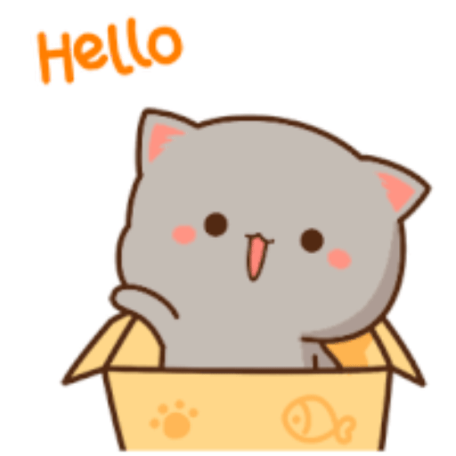
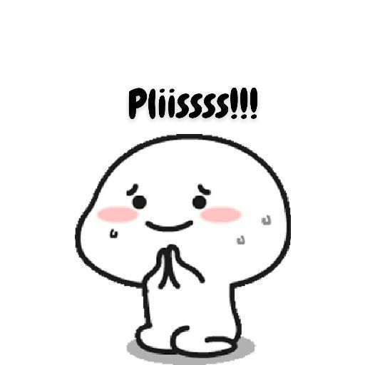
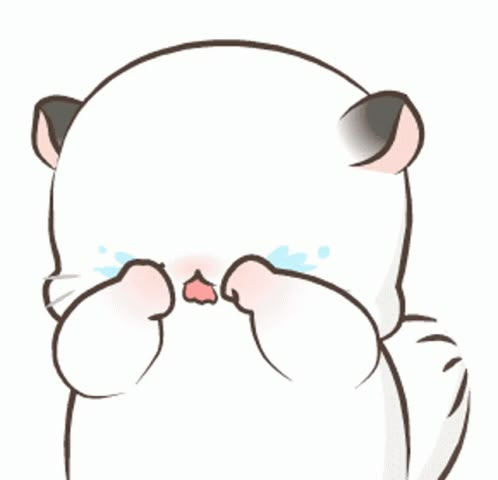
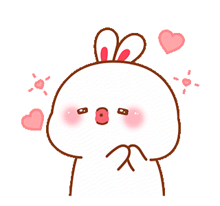

Aku tahu aku udah bikin kamu kecewa. Aku nggak bisa mengubah apa yang udah terjadi, tapi aku pengin kamu tahu kalau aku benar-benar menyesal. 🥺

Aku sadar aku punya salah. Aku juga sadar kalau kata maaf aja nggak cukup buat memperbaiki semuanya. Tapi dari hati yang paling dalam, aku benar-benar minta maaf sama kamu. 🥹
Haiiiii kamuuuu,
Aku cuma mau bilang minta maaf ke kamu, beribu-ribu maaf atas semua kesalahan aku.
Aku bener-bener nyesel. Ternyata bener ya, nyesel itu datangnya belakangan, dan sekarang semuanya udah berantakan.
Maaf aku udah gagalin semua rencana kita, nyepelin usaha kamu, dan maaf juga karena udah bikin kamu ngerasa kayak dibuang. Aku sama sekali nggak bermaksud bikin kamu ngerasain semua itu.
Aku ngelihat kok perjuangan kamu buat aku. Aku juga lihat gimana capeknya kamu, gimana kurang istirahatnya kamu demi bahagiain aku. Makasih karena selama ini kamu selalu ngusahain aku.
Makasih juga udah pernah hadir di hidup aku. Semenjak ketemu kamu, aku ngerasa kayak akhirnya punya tempat pulang. Walaupun sekarang justru aku sendiri yang udah ngerusak rumah itu.
Aku bangga banget sama kamu. I love you, babikuu, sipitkuuu, sayangnya aku. 🥺💙
Aku harap kita bisa kembali sama-sama lagi, walaupun aku tahu itu nggak mudah dan mungkin butuh waktu. Tapi jujur, aku masih berharap kita bisa memperbaiki semuanya.
Kalau kamu masih punya rasa yang sama, aku harap kamu bisa jujur sama hati kecil kamu. Tapi aku juga ngerti kalau kamu butuh waktu buat memahami perasaan kamu sendiri.
Aku janji, kalau kita dikasih kesempatan buat sama-sama lagi, aku nggak mau sebodoh dan segegabah itu lagi. Aku mau belajar dari kesalahan aku, lebih menghargai kamu, lebih mikirin perasaan kamu, dan nggak menyepelekan usaha kamu lagi.
Satu lagi, kamu adalah cinta terakhir aku. Kalau memang ternyata kita nggak bisa sama-sama lagi, kamu akan tetap jadi seseorang yang punya tempat istimewa di hati aku.
Tolong pikirin lagi yaaa. Kamu masih ingat kan kita sebahagia apa dulu? Aku masih ingat semuanya, dan semua kenangan itu berarti banget buat aku. ☺️
Aku akan selalu mencintai kamu, karena selama ini kamu adalah orang yang bisa bikin aku ngerasa nyaman jadi diri sendiri.
Aku nggak minta kamu langsung maafin aku sekarang. Aku cuma berharap suatu hari nanti kamu bisa melihat kalau aku benar-benar berusaha memperbaiki diri dan kesalahan aku.
Loveyouuu, sayangkuuu.

Makasih udah mau baca semua isi hati aku. Makasih buat setiap senyum, waktu, perjuangan, dan kebahagiaan yang pernah kamu kasih ke aku. Semuanya berarti banget buat aku. 🫂